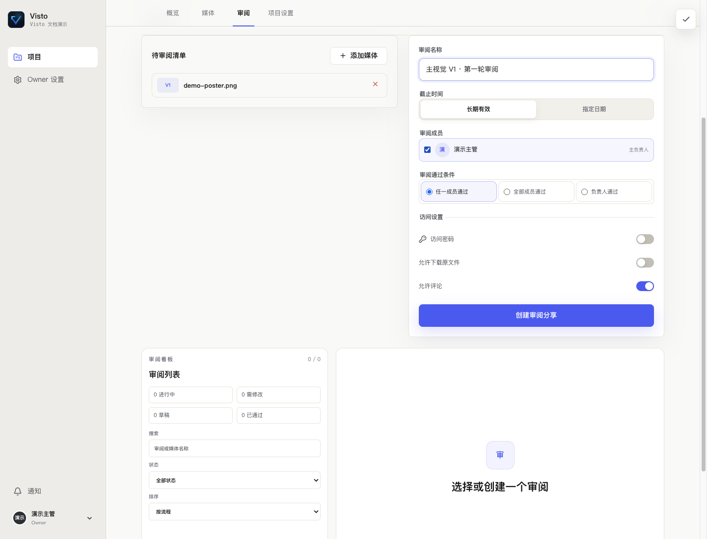

文档首页/审阅与交付
创建一轮审阅
谁来操作： 有创建审阅权限的项目成员。审阅是一轮明确的确认任务，围绕指定版本组织参与者、截止时间和判断规则。


创建步骤
- 从素材详情选定版本后点“创建审阅”；也可在项目“审阅”里选择媒体加入清单。
- 核对每份作品和 V 编号，移除无关内容。
- 输入审阅名称，例如“主片 V2 · 客户文案确认”。
- 设置截止时间；长期有效不代表永远开放写入，仍受审阅状态与分享策略影响。
- 选择审阅成员和需要的负责人。
- 选择通过条件。
- 需要外部分享时设置访问密码、下载和评论权限，提交后核对创建反馈。
选择通过条件
| 条件 | 适用情景 | 需要确认 |
|---|---|---|
| 任一审阅者 | 任何一个指定审阅者即可完成确认 | 不适合要求所有部门签字的流程 |
| 所有审阅者 | 每个被要求的审阅者都要确认 | 确保参与者正确，否则可能一直等待 |
| 仅负责人 | 明确由一个负责人做最终判断 | 必须选定负责人，其他评论不替代其结论 |
草稿与开启
没有分享权限时，创建结果可能保存为草稿。草稿不等于已经对外发送；先检查审阅状态，按页面开启后再创建分享。创建成功但复制链接失败时，审阅可能已经存在，在详情里继续创建或复制分享，不重新发起相同审阅。
看板与详情
项目审阅看板展示不同状态的审阅。打开详情查看固定版本、参与者、评论线程和审核结论。记录每轮的目标，避免把素材级反馈、审阅状态和项目归档混在一起。
完成检查： 清单版本正确、参与人正确、判断规则符合要求、所需分享成功创建且复制。